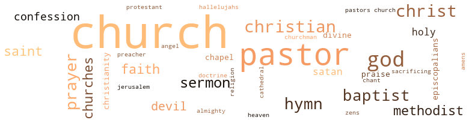

Protestant (The), by Miller, Ezekiel Harry (1933)
51 music-related terms matched in this text.
Most frequent terms in this topic: songs (8); hymn (6); singing (6); song (5); sing (2)
bass.n.07
Definition: the member with the lowest range of a family of musical instruments
| word | sentence |
|---|---|
| bass | He made a few dollars playing a bass fiddle or violin for parties and dances . |
chant.n.01
Definition: a repetitive song in which as many syllables as necessary are assigned to a single tone
| word | sentence |
|---|---|
| chant | It was a miniature general mer - chant store . |
dance.n.01
Definition: an artistic form of nonverbal communication
| word | sentence |
|---|---|
| dances | He made a few dollars playing a bass fiddle or violin for parties and dances . |
dance.v.03
Definition: skip, leap, or move up and down or sideways
| word | sentence |
|---|---|
| dance | Their music was of a jazz nature and most of the tunes one could dance to very well . |
hymn.n.01
Definition: a song of praise (to God or to a saint or to a nation)
| word | sentence |
|---|---|
| hymn | It was well known that he was known to slip quart - ers and dimes under hymn books and then appropriate same to his own use . |
| hymns | The workers sang hymns set to the tune of Tipperary and other well known songs . |
| hymns | As the meeting proceeded it was seen that Captain Straus - bury seemed somewhat disturbed as he had announced the hymns and gave the command to join the army of the Lord . |
| hymn | One evening when she was in a drunken stupor not far from the Dow Street mission , sitting on somebody 's door stoop , swearing violently , she heard the strains of the old hymn . |
| hymn | It seemed that never to be forgotten hymn " Lead kindly light amid the encircling gloom , " was her awakening to things higher and better in this life . |
| hymn | One evening in late March after Ella had gotten the hymn books out and was distributing them to the various pews she was approached by the Rev. Herman Cartwright who made advances to her and also improper proposals . |
| hymn | As the vessel slowly sank could be heard in one part of it the old hymn " Lead kindly light amid the encircling gloom lead thou me on . " |
| hymn | The convention opened with the well known missionary hymn sung by many Christian missionary bodies . |
music.n.01
Definition: an artistic form of auditory communication incorporating instrumental or vocal tones in a structured and continuous manner
| word | sentence |
|---|---|
| music | Their music was of a jazz nature and most of the tunes one could dance to very well . |
| music | Each evening when they were assembled on the street the music and songs and pray - ers could be heard resounding on the air through this dive . |
piano.n.01
Definition: a keyboard instrument that is played by depressing keys that cause hammers to strike tuned strings and produce sounds
| word | sentence |
|---|---|
| piano | On several occasions he had them display their talent both at the piano and in song . |
primo.n.01
Definition: the principal part of a duet (especially a piano duet)
| word | sentence |
|---|---|
| primi | Lawrence Harris in his passions and lusts was as primi - tive as any dumb animal could be . |
section.n.01
Definition: a self-contained part of a larger composition (written or musical)
| word | sentence |
|---|---|
| section | This latter was of course in the Negro section of Harrisonville . |
| section | That same evening Dora did not attend the colored Sal - vation Armies meeting but instead went to the meeting of Captain Strausbury in the white section . |
sing.v.02
Definition: produce tones with the voice
| word | sentence |
|---|---|
| sing | On certain evenings of the week Captain Strausbury and his little band of followers would appear on the Northeast corner of the street and sing songs , pray and exhort the people to follow the Master . |
| sang | The workers sang hymns set to the tune of Tipperary and other well known songs . |
| sang | Each night as they sang and prayed it seemed that something unusual had happened . |
| sing | When her ears caught the strain of this old , old song , which she had often heard and helped sing in her childhood days she sobered up and made her way to the mission . |
| sung | The convention opened with the well known missionary hymn sung by many Christian missionary bodies . |
singing.n.01
Definition: the act of singing vocal music
| word | sentence |
|---|---|
| singing | Perhaps they might be able to solve all the perplexing prob - lems confronting them by shouting and singing . |
| singing | In a short time in the army uniform you could see Sarah with the band singing and praying to help uplift mankind . |
| singing | The meeting closed with the singing of " God be with you till we meet again " . |
| singing | Ella 's duties at the mission consisted in looking after the chapel and the singing and the like . |
| singing | She once said " Saving souls , how in hell are you going to save souls by singing ? " |
| singing | There was Elder Monroe who looked like he might belong to the Blue Stockinged delegation , but who in reality belonged to the shouting and singing delegation better known as Methodists . |
song.n.01
Definition: a short musical composition with words
| word | sentence |
|---|---|
| song | It took a sudden plunge down a one hundred and fifty foot embankment not many miles distant from the famous Juaniata River made famous by the Indian song called " the Blue Juaniata . " |
| songs | On certain evenings of the week Captain Strausbury and his little band of followers would appear on the Northeast corner of the street and sing songs , pray and exhort the people to follow the Master . |
| song | On several occasions he had them display their talent both at the piano and in song . |
| songs | The workers sang hymns set to the tune of Tipperary and other well known songs . |
| songs | Sometimes common bawds passing the street would stop and listen to the confessions and songs and pray - ers of this humble group . |
| songs | Each evening when they were assembled on the street the music and songs and pray - ers could be heard resounding on the air through this dive . |
| songs | No doubt after hearing over again and again the quaint songs and earnest prayers some of the low down men and women were wont to change their ways . |
| songs | She related how evening after evening she could hear the quaint songs and hear the prayers for fallen men and women . |
| song | When her ears caught the strain of this old , old song , which she had often heard and helped sing in her childhood days she sobered up and made her way to the mission . |
| song | The song of missions seemed to carry with it a strong desire on the part of those present to give all within their means for the missionary cause whether for Africa or elsewhere . |
| songs | There were in this motley crowd from day to day good people and bad people , boot - leggers and beggars as well as occasionally a prostitute and vendors of sacred songs called ballads . |
| songs | Among those begging alms was a peg or wooden legged man who remained about an eighth of a mile away from the grounds with his wares which were ballads of sacred songs . |
| song | She was Izabel Gunston an evangel of song at the mission . |
theme.n.03
Definition: (music) melodic subject of a musical composition
| word | sentence |
|---|---|
| theme | Wherever one saw or heard a group talk , Rome or Union seemed to be the theme yet the various groups were as far from union and harmony as the South Pole is from the North Pole or the North Star is from the Earth . |
tune.n.01
Definition: a succession of notes forming a distinctive sequence
| word | sentence |
|---|---|
| line | Being a main line express it was necessary to make this time up as soon as possible . |
| tune | The workers sang hymns set to the tune of Tipperary and other well known songs . |
| tunes | Their music was of a jazz nature and most of the tunes one could dance to very well . |
| strain | Every - one seemed to join in the strain " From Greenland 's Icy Mountains to India 's Coral Strand " . |
| line | He swerved from his line somewhat and came within approachable distance of the berg and struck with wonder and amazement were the passengers many of whom had never seen a chunk of ice bigger than that which the iceman hauls on his ice truck or wagon . |
| lines | There were nevertheless long lines of people waiting their turn for tickets . |
violin.n.01
Definition: bowed stringed instrument that is the highest member of the violin family; this instrument has four strings and a hollow body and an unfretted fingerboard and is played with a bow
| word | sentence |
|---|---|
| fiddle | He made a few dollars playing a bass fiddle or violin for parties and dances . |
| violin | He made a few dollars playing a bass fiddle or violin for parties and dances . |
51 violence-related terms matched in this text.
Most frequent terms in this topic: killed (5); scorn (3); shot (3); murder (2); jealousy (2)
animosity.n.01
Definition: a feeling of ill will arousing active hostility
| word | sentence |
|---|---|
| animosity | In asking for her resigna - tion Dr. Panleave stressed that it was being done solely for the good of the college and not for any animosity against her . |
contemn.v.01
Definition: look down on with disdain
| word | sentence |
|---|---|
| scorn | Did Dora Dennis scorn or spurn him there ? |
| scorn | She looked with scorn and hatred whenever any female paid undue attention to George or whenever George mentioned the name of any of his inmates . |
| scorn | Later a rumor spread that when the good pastor was on his vacation he was often seen with a woman of no - toriety upon which the church looked with eyes of scorn . |
| despised | " Poor Henry VIII has been despised for divorcing Cath - erine but does not the scripture forbid the marrying of a brother 's wife . |
defy.v.01
Definition: resist or confront with resistance
| word | sentence |
|---|---|
| withstand | As the waves dashed against her broad - side and mountain high she could not withstand the pres - sure being so heavily loaded . |
destroy.v.04
Definition: put (an animal) to death
| word | sentence |
|---|---|
| destroy | He , whom she had honored , had sought to destroy her only child , a mere baby of twelve years . |
enrage.v.01
Definition: put into a rage; make violently angry
| word | sentence |
|---|---|
| enraged | He said he heard sounds of beasts , and saw animals enraged , and serpents ' fangs . |
fight.v.02
Definition: fight against or resist strongly
| word | sentence |
|---|---|
| fought | The getting of the divorce was not contested save James fought the part of the case saying his wife Anita had time and again refused to bear him a child and he felt it an injustice that he should pay her alimony . |
| fight | Many came for the specific purpose of seeing their friends ; others came to see and be seen ; others to fight out old grudges with their en - emies and still others begging alms . |
| fought | Hip , hip , hurray , and yell after yell , was heard as the horses fought madly for the lead and position . |
fury.n.01
Definition: a feeling of intense anger
| word | sentence |
|---|---|
| rage | When the chauffeur reached the front door of the parsonage he heard such wrangling and jangling and swearing as he had not heard since he left Uncle Sam 's army ; relates the chauffeur of the taxi , Mrs. Harris , the wife of the minister in charge was in a perfect rage , calling her husband vile names and swearing to the top of her voice . |
| rage | There was always a loud voice and a soft undertone voice which was that of the pastor always trying to keep down his wife 's rage which in most every case was about nothing whatsoever but because she was drunk . |
| fury | Some showed their fury by cry - ing out lynch him . |
grudge.n.01
Definition: a resentment strong enough to justify retaliation
| word | sentence |
|---|---|
| grudges | Many came for the specific purpose of seeing their friends ; others came to see and be seen ; others to fight out old grudges with their en - emies and still others begging alms . |
gun.n.01
Definition: a weapon that discharges a missile at high velocity (especially from a metal tube or barrel)
| word | sentence |
|---|---|
| guns | Two of us had bought guns and had decided to leave the bum town of Philadelphia for New York . |
| gun | When we had gone a few miles in the dense woods far from any one we pressed a gun to the side of our man and ordered him to leave the car and we took it and went full speed into New York . " |
hate.n.01
Definition: the emotion of intense dislike; a feeling of dislike so strong that it demands action
| word | sentence |
|---|---|
| hatred | She looked with scorn and hatred whenever any female paid undue attention to George or whenever George mentioned the name of any of his inmates . |
injury.n.01
Definition: any physical damage to the body caused by violence or accident or fracture etc.
| word | sentence |
|---|---|
| hurt | I have stooped to do a hurt where it would give me pleasure and happi - ness . |
| harm | She had done more harm to destroy family life and wreck homes and send wo - men to early graves than a thousand plagues . |
jealousy.n.01
Definition: a feeling of jealous envy (especially of a rival)
| word | sentence |
|---|---|
| jealousy | This jealousy as jealousy always or most always does , was to lead to tragedy . |
| jealousy | This jealousy as jealousy always or most always does , was to lead to tragedy . |
kidnap.v.01
Definition: take away to an undisclosed location against their will and usually in order to extract a ransom
| word | sentence |
|---|---|
| kidnapped | Everybody thought that the child had been kidnapped as she could be found nowhere . |
kill.v.10
Definition: cause the death of, without intention
| word | sentence |
|---|---|
| killed | In all sixty two passengers were injured or killed and among the number killed was Mary Breckenridge of White Plains , New York . |
| killed | In all sixty two passengers were injured or killed and among the number killed was Mary Breckenridge of White Plains , New York . |
| killed | He had taken a turn for the better and arose from his bed and had found out from a letter left in Mrs. Breckenridge 's room that his daughter had been among the killed on the Keystone Express . |
| killed | Among those killed was that of a traveler with a ticket for California . |
| kill | A posse comitatus was sent after them and ordered to shoot to kill if they encountered them . |
| killing | Another shot went wild and the third shot did the fatal work killing Bell Jordan in George Herman 's arms . |
| kill | The Rev. started to reply by saying Mrs. Rodfield but he was interrupted by James who said , " get out or I 'll kill you . " |
| killed | This nearly killed the child . |
lynch.v.01
Definition: kill without legal sanction
| word | sentence |
|---|---|
| lynch | Some showed their fury by cry - ing out lynch him . |
murder.n.01
Definition: unlawful premeditated killing of a human being by a human being
| word | sentence |
|---|---|
| murder | Rev. James Pierce being able to care for five or six child - ren felt that to practice such a thing as birth control was not only murder but sin for which Anita would have to answer , as well as a thing that robbed him of fatherhood and a family of sturdy boys and girls to live for . |
| murder | The ver - diet was announced Anita Forbes guilty of murder in the first degree . |
musket_ball.n.01
Definition: a solid projectile that is shot by a musket
| word | sentence |
|---|---|
| ball | Busybody elders and disgruntled mem - bers in general kept the ball rolling and in less than three months the storm burst forth again . |
open_fire.v.01
Definition: start firing a weapon
| word | sentence |
|---|---|
| fired | This was too much for Anita and raising the revolver she fired three shots in rapid succession . |
| fire | Be - cause of his splendid oratorical ability the Y. M. C. sent him all over the country into various meeting places and at camps to instill courage and to fire their patriotism . |
punch.n.01
Definition: (boxing) a blow with the fist
| word | sentence |
|---|---|
| punch | I then gave her a good punch or two before pushing her to the door . |
raid.v.01
Definition: search without warning, make a sudden surprise attack on
| word | sentence |
|---|---|
| raid | The busybodies had the cops raid the house . |
| raided | What the cause or charge for raiding the house is not known but someone had it raided with the hopes of finding something on the Rev. Carrigan . |
shoot.v.02
Definition: kill by firing a missile
| word | sentence |
|---|---|
| shoot | A posse comitatus was sent after them and ordered to shoot to kill if they encountered them . |
| shot | There were four , three were shot to death and the fourth surrendered . |
| shot | In addition to this unfortunate begging group there were those who simply lived in the poolrooms or shot craps in the surrounding alleys and also there were all kinds of hangers-on who sat half drunk in a saloon seat waiting for someone more prosperous than they to enter the saloon and treat the whole house to liquor or cigars or both . |
| shot | On one occasion a woman had been shot and on several other oc - casions screams and oaths had been heard . |
shooting.n.02
Definition: killing someone by gunfire
| word | sentence |
|---|---|
| shooting | Immediately after the shooting Anita wild with excitement rushed to the street clad only in her night clothes . |
sic.v.01
Definition: urge to attack someone
| word | sentence |
|---|---|
| set | She whom the Rev. Cotton had practically picked from the alley and set on a pedestal knew nothing of his clandestine life outside his home . |
sting.n.03
Definition: a painful wound caused by the thrust of an insect's stinger into skin
| word | sentence |
|---|---|
| bite | This was not to be condemned as such any more than one would condemn a rattlesnake for having rattles and poisoning one with its bite . |
suicide.n.01
Definition: the act of killing yourself
| word | sentence |
|---|---|
| suicide | Rev. John Busby was stripped of his robes and after six months when he had gone to the city of Washington committed suicide in the tenderloin district . |
violence.n.01
Definition: an act of aggression (as one against a person who resists)
| word | sentence |
|---|---|
| violence | The vote entirely exonerated the pastor and Jason Mohr was ordered to leave Newsport at once lest dire violence would overtake him . |
weather.v.01
Definition: face and withstand with courage
| word | sentence |
|---|---|
| weather | Several vessels coming to and fro were wrecked and the steamer Southern Star being heavy enough to weather this storm , but was loaded too heavy with freight . |
wound.n.01
Definition: an injury to living tissue (especially an injury involving a cut or break in the skin)
| word | sentence |
|---|---|
| wound | Sure enough there lay still in death with a bullet wound in his head the once great and rescuing angel , Captain Milton Strausbury . |
297 religion-related terms matched in this text.
Most frequent terms in this topic: church (97); pastor (43); Church (22); God (16); Christ (10)
amen.n.01
Definition: a primeval Egyptian personification of air and breath; worshipped especially at Thebes
| word | sentence |
|---|---|
| amens | On various occasions and especially on big church occasions like Quarterly meetings she was very conspicuous by her amens and hallelujahs , occasion - ally shouting . |
baptist.n.01
Definition: follower of Baptistic doctrines
| word | sentence |
|---|---|
| Baptists | The Baptists were there in numbers ever professing the brotherhood of man but inwardly harboring a dislike for Religious bodies other than their own . |
| Baptist | In late October Rev. Alexander in company with two other Baptist ministers embarked for the Holy Land and parts of Europe and the Orient . |
| Baptist | The one to Dr. Alexander follows : Baptist Mission House , Ponce , Cuba . |
| Baptist | AFRICA MUST BE REDEEMED It was Sunday evening , October 14 , 1928 , when the Baptist convention on Missions was assembled in the Baptist Church in the city of Alanta . |
| Baptists | They represented all parts of the world where the white Baptists had planted the Baptist faith . |
| Baptists | Now in Africa among the Baptists were several schools of various kinds among which was Barthman Institute . |
| Baptist | He was expelled from the Baptist con - nection . |
| Baptist | In this town were four churches , a Methodist , a Presby - terian , a Baptist and one called the Dutch Reformed . |
cathedral.n.02
Definition: the principal Christian church building of a bishop's diocese
| word | sentence |
|---|---|
| cathedral | The trial was held in the great cathedral church . |
chant.n.01
Definition: a repetitive song in which as many syllables as necessary are assigned to a single tone
| word | sentence |
|---|---|
| chant | It was a miniature general mer - chant store . |
chapel.n.01
Definition: a place of worship that has its own altar
| word | sentence |
|---|---|
| Chapel | The funeral of little Mary Breckenridge was held from Proctor 's Chapel undertaking establishment and only the members of the immediate family were in attendance . |
| chapel | Ella 's duties at the mission consisted in looking after the chapel and the singing and the like . |
christendom.n.01
Definition: the collective body of Christians throughout the world and history (found predominantly in Europe and the Americas and Australia)
| word | sentence |
|---|---|
| Christianity | She was modest and quiet and true to the principles of Christianity . |
| Christianity | Of all the modern cesspools known to humanity this one masquerading under the name of charity and Christianity was as full of stench as any and should not have been al - lowed to exist . |
christian.n.01
Definition: a religious person who believes Jesus is the Christ and who is a member of a Christian denomination
| word | sentence |
|---|---|
| Christians | " Girls whatever else you do be loyal to Dedford wher - ever you are and conduct yourselves as Christians and up - hold the ideals of the founders of this great school . " |
| Christian | There were many and varied so called Christian bodies all supposed to represent Christ on earth . |
| Christians | In the three pastors , representatives of God 's branch of Christians called Methodists , we have the highest type of manhood . |
| Christians | Nevertheless all this charity her life had always been considered too shady for the best Christians in the neighborhood . |
| Christian | At the outbreak of the Great War in Europe we find him preparing to enter the Christian ministry . |
| Christian | It is a known fact that politics and the Christian Ministry do not go hand in hand . |
| Christians | Why Rome the seat of the Catholic Church should see and behold what Christians they were . |
| Christian | Mrs. Rodfield became so much in love with the good Christian Missionary that she now began to show signs of coolness to her husband when he would come in from an extended trip working for the railroad . |
| Christian | Among these Pilgrims what Christian bodies were repre - sented ? |
| Christians | Rev. Martin Watson of Mt. Perrin church gave a prayer in which he commanded all good Christians to follow their maker . |
church.n.02
Definition: a place for public (especially Christian) worship
| word | sentence |
|---|---|
| church | Harriet Westinghouse was a church worker of Gallivan Center too , but she was a girl of the flapper type , modernistic before modernistic times . |
| church | The name of the young man was Lawrence Harris a great and enthusiastic worker in the church . |
| church | He was in the church as pious as a lamb . |
| church | This went on for years and still he remained in the church as one of its chief pillars . |
| church | While he always got away with funds from the church he was now to encounter something he could not get away with . |
| church | Said one in this church body " brother Harris , because he was the only colored man to ever work in the Manchester bank , was framed up by white folks in order to get rid of him and place a white man in his place . " |
| church | Mona Sanders was known to some of the church and others outside the church to partake of that concoction that has a tendency to bewilder one and make the head swim . |
| church | Mona Sanders was known to some of the church and others outside the church to partake of that concoction that has a tendency to bewilder one and make the head swim . |
| church | On various occasions and especially on big church occasions like Quarterly meetings she was very conspicuous by her amens and hallelujahs , occasion - ally shouting . |
| church | Lawrence Harris , an honored trustee of the church , was known to entertain the various brethren who visited from time to time the little African church . |
| church | Of the visitors of church brethren entertained by brother Harris was one Dr. David Troog , president of a colored jerkwater or sham college in Decateur , Georgia . |
| church | Please make amends before I carry this case before the church authorities . |
| church | The case was brought to trial before the church board or tribunal . |
| church | The evidence was against the Dr. and he who had been a devoted member of the church and head of one of its colleges was now stripped of his power and position and the following September another was in his place as President of the Col - lege . |
| church | David Troog left the services of the church that he had formerly adored and sought work in the government service in the city of Chicago . |
| church | Said Harris when the case was won in the church trial . |
| church | Her man had pre - ceded her going to the church as it was supposed . |
| church | He had started to church and this is where I found him . |
| church | I had been wonder - ing several times in the past why he would leave so early for church on Sunday evening . |
| church | After Harris had met his women in Mona Sanders little shop he would then go to church and always be found in the amen corner . |
| church | It could not be kept secret as Sally Turner had it all over the place before church was out that Sunday evening . |
| church | Thus was ended the life of one of the closest of church goers yet one of the most primitive and sinful of men . |
| church | Indeed the congregation suggested his going to the Holy Land at their expense as he had rendered such service to the church . |
| church | Would Jason Mohr further publish to the world that which he had exposed to the deacons of the church . |
| church | A church trial must be held since the young student had the evidence in letters and still more to tell by word of mouth . |
| church | Dr. Alexander remained in Riddell two years and during this time his church increased from two thousand members to four thousand and one hundred members . |
| church | When he came to the Riddell charge the church was already free of debt . |
| church | The convention over and the Rev. Webster hurriedly left for his home , perhaps wishing never to see the place again , and too , fearing Mrs. Truman would expose him to the church authorities . |
| church | You could help the mission cause greatly being a church financier you would be able to stimulate the people to giving . |
| church | Funds were being collected by the parishioners of this little rural church to build a new brick church . |
| church | Funds were being collected by the parishioners of this little rural church to build a new brick church . |
| church | The money collected had been placed in the National Bank so that whenever any was needed for any of the church work it could be drawn by the pastor without a lot of red tape . |
| church | Upon reporting at the bank it was found that all the church funds had been drawn by the Rev. Herman Cartwright . |
| church | This the Rev. James Cartwright did and he was a missionary of God 's gospel representing the church in the French Cameroons . |
| church | This college at Newtown was one of the oldest of the church . |
| church | THE ST. JOHNS EPISODE Out at 132nd Street and Crossen Place in an Eastern City stood the fashionable St. John 's church . |
| church | The congregation had grown and grown until each time it outgrew the seating capacity of the church . |
| church | At last exasperated Rev. James Pierce told his troubles to many of his church folk . |
| church | This was evident especially after the new church edifice had been built . |
| church | All these things had taken place in the course of years but the worst episode in the life of the church was to happen in 1925 . |
| church | James Carrigan the pastor who built the last edifice and had been mostly responsible for the rapid growth of the church from 400 to nearly 4,000 souls was now the target . |
| church | Certain elders of the church who had long looked and hoped for benefits undeserved began to shoot darts fast and thick . |
| church | Later a rumor spread that when the good pastor was on his vacation he was often seen with a woman of no - toriety upon which the church looked with eyes of scorn . |
| church | The case was finally brought before the church and a thorough investigation had . |
| church | It was finally decided to recall him as one of the church men said " Since his nigger concubine has disgraced him he should be recalled . " |
| church | It was the third Sunday in August dur - ing the pastorate of the Ocean Beach church by the Rev. Artemus Wright , a graduate of Draw Theological Seminary . |
| church | He expounded this sermon with great eloquence and in such a way that many otherwise cold were touched to give to the limit of their means for the support of the church . |
| church | The very last Sunday of this particular soul stirring camp - meeting a member of the church not connected with any nefarious dealings found about fifty or sixty half pint bottles of firewater stored away amidst a clump of bushes . |
| church | Rev. Harris had come to this church from Allenburg , Maryland . |
| church | It happened one balmy day , Sunday to be specific , in June ; the church was having Quarterly meeting . |
| church | Always on such occasions the church was crowded and there was not even standing room . |
| church | William lived in the tenant house of Bartholemew and here on the twelfth day of June , 1890 , was born a male baby to the Monroe 's who was destined to play a part in the world as a minister of God 's gospel , not of his native church but of the great Methodist church . |
| church | He was preparing to take a course in the Theol - ogical Seminary at Marion , New Jersey , and thus prepare for the church . |
| church | During all his ministerial career no one in the church preached more against corruption than he . |
| church | He had attained the highest office possible in the church . |
| church | The Rev. Edwin Cotton when he was first ordained a priest in the church was made a missionary and for several years conducted the Mission on the East Side in New York City . |
| church | A church and hospital were built in the hot tropics of Porto Rico and a small school was founded in the Philippines all by funds contri - buted largely through the influence of Father Cotton . |
| church | Mrs. Cotton had been given so much freedom and her work for the church called for her being away so much that she was never suspecting of her husband 's evil doings . |
| church | She had been a regular attendant at the Mission for sometime and the Rev. Cotton had asked her on more than one occasion to join them in their church and become confirmed in the faith . |
| church | It was a bright sunny day in May 1929 when the church authorities tried Rev. Edwin Cotton for conduct unbecoming a churchman . |
| church | The trial was held in the great cathedral church . |
| church | Now he was on church trial as a rogue and criminal ; a wolf in sheep 's clothing . |
| church | Finally the last witness in the church trial was called and with this the trial soon ended . |
| church | Nearly a week after this church trial the trial brought by the father of Izabel was heard . |
| church | There were bathing houses , tennis courts , moving pictures , a church and school . |
| church | During the stay of Edwin Cotton , who was now known as prisoner No. 988 , the church and school were his camping grounds . |
| church | Among the first to be in attendance at religious services at the prison church was No. 988 . |
| church | A few months after his marriage , upon his splendid past record as a min - ister of God 's gospel , he was elected a Bishop of the church . |
| church | Appropriations were supposed to be received from the church according to the number of inmates in it . |
| churches | This was one of the Pioneer churches founded by Asbury himself . |
| church | Rev. Martin Watson of Mt. Perrin church gave a prayer in which he commanded all good Christians to follow their maker . |
| church | Rev. Gainer of Avonville , one of the great evangelists of the church , gave the opening address which was full of inspiration for youth and full of consolation for age . |
| church | I seem to be a radical for the church and its cause in preaching about public rectitude . |
| church | The funeral was held May 26 from St. Paul 's church , where the Bishop had often presided . |
church.n.04
Definition: the body of people who attend or belong to a particular local church
| word | sentence |
|---|---|
| church | All church workers taking delegates took them gratis , not receiving a penny . |
| Church | Whenever the African Methodist Church held its rallies or quarterly meet - ings Lawrence Harris was a conspicuous figure with the col - lection plate . |
| Church | He came back to his home and was as ever a leader in the African Methodist Church . |
| church | The church congregation when they saw the return of Brother Harris , entirely exon - erated him of the crime for which he paid the price of being shut up in the Penitentiary . |
| church | Lawrence Harris , an honored trustee of the church , was known to entertain the various brethren who visited from time to time the little African church . |
| church | The former pastor Rev. Lee Carpenter had died and left this fashionable church in a debt of over one hundred thousand dollars . |
| Church | It must first be recognized that Calvary Baptist Church was in the fashionable part of Newsport and in the summer season boasted the presence of many a man and woman of much wealth . |
| church | The church did not want this dis - grace to be known as the Rev. Dr. Peter Alexander was in very high esteem among all of the Newsport congregation both aristocratic and middle class . |
| church | The deacons and some other officers of the church were called in secret session . |
| church | The church at Riddell was known as Third Avenue Church and served the people of Rid - dell as the Calvary Church had served those of News - port . |
| Church | One object of this meeting or conference was to raise money for the cause of West Indian Missions in the Church . |
| Church | Dominio Alvarez was now head of the Church Mission work in Cuba , and was stationed at Ponce . |
| churches | THE OUTCAST During the year 1907 when many factories of Nemark and adjoining towns had closed their doors and the people were suffering for the bare necessities of life , the Rev. Herman Cartwright together with workers from various churches , opened what was known as the Dow Street Mis - sion . |
| churches | This mission was under the direct control of the churches in Nemark . |
| Church | She was a member of the McCormick Presbyterian Church on Le Grand Avenue , one of the fashionable resi - dential streets of Nemark . |
| Church | The Rev. Timothy Gainer was pastor of Avonville Church . |
| church | To those not acquainted with the old time church college type of boarding school a little explanation here will be ne - cessary . |
| church | This church as an institution dated back to the year 1887 , when a part of the Alberry Church congregation split and formed a mission first called Ashmont Mission , then later changed to St. Johns . |
| Church | This church as an institution dated back to the year 1887 , when a part of the Alberry Church congregation split and formed a mission first called Ashmont Mission , then later changed to St. Johns . |
| church | The tone of this particular church had always been aris - tocratic . |
| church | Above all he had been one hundred percent a business man and the financial affairs of the church were always handled with such skill and everything accounted for that no question could be raised . |
| Church | So it was in the case of the pastor of fashionable St. John 's Church . |
| Churches | In this motley group were white , black , yellow and all colors and races represented in the Protestant Churches in the United States . |
| Church | This ended the double career of Rev. James Carrigan , the Dr. Jeckyl and Mr. Hyde of fashionable St. John 's Church . |
| Church | AFRICA MUST BE REDEEMED It was Sunday evening , October 14 , 1928 , when the Baptist convention on Missions was assembled in the Baptist Church in the city of Alanta . |
| church | All the countries of the world were discussed wherever the great Baptist church had missionaries . |
| Church | The Rev. Perry Brinton , representing Monumental Church , Alanta , was one of the foremost leaders in the missionary movement in collecting funds for Africa . |
| Church | There was Edwin Cotton who stood high up in the councils of the Episcopal Church and still higher in his own worldly estimation . |
| Church | Hannah Miller went from deacon to deacon in Monumental Church and the news here spread like an epidemic . |
| Church | During the investigation it was known to some who did not wish to say anything while the Pastor was in charge of Monumental Church , that Rev. Brinton had collected over two thousand dollars more than he had reported to the convention . |
| Church | At the following conference , which convened in May , Rev. Wright was sup - planted at Ocean Beach 's Church by Rev. John Busby . |
| church | This episode caused such confusion as the church had never before witnessed . |
| church | The church at Ocean Beach during the year 1928-1930 was pastored by Rev. James Harris . |
| church | The father had always been a faithful attendant pf the church of St. John . |
| church | William lived in the tenant house of Bartholemew and here on the twelfth day of June , 1890 , was born a male baby to the Monroe 's who was destined to play a part in the world as a minister of God 's gospel , not of his native church but of the great Methodist church . |
| Church | Why Rome the seat of the Catholic Church should see and behold what Christians they were . |
| church | I shall always hold him in high esteem if for nothing save that he gave us the great Episcopal church . " |
| Church | Edwin Cotton might have been a Henry VIII himself as he was at heart as one with the wicked sovereign who brought about the English Reformation , forerunner of many later schisms in the Christian Church . |
| Church | While Father Cotton served the Church and God on one side , he served the devil on the other . |
| church | Some perhaps desired to show to the Roman church how they could come to her very doors and defy her and perhaps others there were who thought by some means good or otherwise Rome might be induced to join them . |
| church | Edwin Cotton had been trying to persuade her to join the mission church for some time . |
| church | This trial was held in the court room just ten blocks from where the one time Rev. Cotton held his church He was now in the shadow where Sunday after Sunday he had played the part of a saint while under cover at night he had played in the same neighborhood a demon . |
| church | There were those in attend - ance at this gathering who outwardly wore the garments of the Protestant church but who under cover and in dark - ness acted the part of Satan . |
| churches | In this town were four churches , a Methodist , a Presby - terian , a Baptist and one called the Dutch Reformed . |
| churches | This was true despite the several Protestant churches . |
| Church | THE THREE PASTORS The Baltmore Division of the Methodist Church was holding its sixty-seventh annual Sunday School convention . |
| church | Roland went to the Theological seminary , one of the most famous Theol - ogical schools under the Methodist church . |
| church | He was ordained a minister in the Methodist church . |
| church | His posi - tion as Bishop of the church would add prestige and dollars to the organization which was always in need of funds . |
| Church | Miss Mason read during the early part of the con - vention , a paper on " The Relation of the Home to the Church . " |
| Church | I mention these three ministers of God 's gospel because they were the chief lights of the Church of God and all of them in bombastic language had acted as though they were saints on earth . |
cleric.n.01
Definition: a clergyman or other person in religious orders
| word | sentence |
|---|---|
| churchman | It was a bright sunny day in May 1929 when the church authorities tried Rev. Edwin Cotton for conduct unbecoming a churchman . |
confession.n.05
Definition: the document that spells out the belief system of a given church (especially the Reformation churches of the 16th century)
| word | sentence |
|---|---|
| confession | He was child - like in his confession thus demonstrating the primitive in - stinctive tendencies of his race . |
| confessions | Sometimes common bawds passing the street would stop and listen to the confessions and songs and pray - ers of this humble group . |
| confessions | One evening in June 1922 it was noticed that there was standing listening to the confessions a woman well dressed . |
| confession | Whether he feared Mrs. McCloskey more than the board I do not know but she perhaps more than anyone else was responsible for his quick confession . |
curate.n.01
Definition: a person authorized to conduct religious worship
| word | sentence |
|---|---|
| pastor | It happened a few years back when the now Presiding Elder Webster was pastor of Gallivan Center , he although a married man of God , had been very close , as a matter of fact , too close a friend of Harriet Westinghouse . |
| pastor | The former pastor Rev. Lee Carpenter had died and left this fashionable church in a debt of over one hundred thousand dollars . |
| pastor | The pay - ing off of this debt now confronted the new pastor . |
| pastor | The first sermon of the new pastor was preached the first Sunday in September . |
| pastor | This type of pastor was very much suited to a rich con - gregation but how about those in the congregation not fa - vored by riches . |
| pastor | Would they take a liking to the new pastor . |
| pastor | He was one of the few people of Newsport with whom the aristocratic pastor was seen to associate . |
| pastor | When the people saw upon several occasions Rev. Alexander in Jason Mohr 's company they could not help but remark that the pastor was becoming democratic . |
| pastor | The pastor would be gone until April . |
| pastor | This summer he did not work at the resort but re - mained at the Alexanders as the pastor 's secretary . |
| pastor | Jason Mohr seeing that his financial status was ruined now proceeded to the deacons of Calvary Church and told them of the closer than natural relations between him and their pastor . |
| pastor | How would the congregation of Calvary Bap - tist Church receive this scandalous news about their pastor . |
| pastor | The letters after they had been procured from Mohr were slipped through the crowd and lost for - ever as witness to his relationship to Calvary 's pastor . |
| pastor | The vote entirely exonerated the pastor and Jason Mohr was ordered to leave Newsport at once lest dire violence would overtake him . |
| pastor | Thus was whitewashed the pastor who was as guilty of the charges as satan is guilty of being a demon . |
| pastor | The money collected had been placed in the National Bank so that whenever any was needed for any of the church work it could be drawn by the pastor without a lot of red tape . |
| pastor | The Rev. Timothy Gainer was pastor of Avonville Church . |
| pastors | In the three pastors , representatives of God 's branch of Christians called Methodists , we have the highest type of manhood . |
| pastors | Many who wished to connect with this congregation had been turned down and on three occasions pastors sent or applying for positions there had been either rejected or entirely ignored . |
| pastor | James Carrigan the pastor who built the last edifice and had been mostly responsible for the rapid growth of the church from 400 to nearly 4,000 souls was now the target . |
| pastor | A glaring fault must be found in order to oust the pastor but seemingly none could be found . |
| pastor | Out of 4000 members only around 200 responded to the call for a meeting to vote for and against the pastor . |
| pastor | By a majority of ten it was held that the pastor was all that could be hoped for and therefore he was sustained . |
| pastor | So it was in the case of the pastor of fashionable St. John 's Church . |
| pastor | Later a rumor spread that when the good pastor was on his vacation he was often seen with a woman of no - toriety upon which the church looked with eyes of scorn . |
| pastor | This was broken down when the person in question proved to be the sister of the pastor who was accompanying him and his wife on their vacation . |
| pastor | The meddling elders and members were not to be un - daunted in their efforts against the pastor . |
| pastor | They kept working until they were sure they had found something to justly accuse their pastor of it . |
| pastor | It was said that there was a member , a very close friend of the pastor , who kept a speak - easy and of which the pastor had knowledge of but withheld it because of the many favors that were heaped upon him by the person in question . |
| pastor | It was said that there was a member , a very close friend of the pastor , who kept a speak - easy and of which the pastor had knowledge of but withheld it because of the many favors that were heaped upon him by the person in question . |
| pastor | Another rumor had been rampant for some time and the good Christian elders now set a watcher or watchers who saw the pastor enter the home of Madame Dornalt . |
| pastor | The vote was taken and twenty-one hun - dred and eighty-seven voted to oust the pastor immediately and it was done . |
| pastor | In his report to the convention he had the highest of any single indi - vidual pastor reporting . |
| Pastor | During the investigation it was known to some who did not wish to say anything while the Pastor was in charge of Monumental Church , that Rev. Brinton had collected over two thousand dollars more than he had reported to the convention . |
| pastor | At the morn - ing session the sermon was preached by Rev. Artemus Wright , the pastor . |
| pastor | The finding member , John Huntley , was an avowed foe of the then pastor Rev , Busby . |
| pastor | The findings proved that the deputies that were to keep the peace were in league with the pastor , Rev. Busby , to sell liquor and divide the proceeds among them . |
| pastor | It was well known that he was liked very much as a pastor but there was low murmuring about his family life . |
| pastor | Mrs. Myrtle Harris , wife of the pastor , always a conspicuous figure because of her great physical stature , was among those testifying the way they were going to serve the Master . |
| pastor | The pastor looked chagrined and sad and tears stood in his eyes as he closed the door behind him . |
| pastor | On several occasions before neighbors close to the par - sonage had heard words between the pastor and his wife . |
| pastor | There was always a loud voice and a soft undertone voice which was that of the pastor always trying to keep down his wife 's rage which in most every case was about nothing whatsoever but because she was drunk . |
| pastor | It read as follows : Rev. Edwin Cotton My dear pastor : The operation will be performed tomorrow . |
| pastor | Mrs. Pierce had had all confidence in her pastor , now had seen him enrapped in shame and disgrace . |
| pastor | She blamed it not on her teacher or others but directly upon Edwin Cotton , the pastor . |
| pastor | There were many there who had placed all their confidence and trust in their pastor . |
doctrine.n.01
Definition: a belief (or system of beliefs) accepted as authoritative by some group or school
| word | sentence |
|---|---|
| doctrine | Sometimes I pretended to be reading a magazine or newspaper ; at other times I would be pretending to write a letter or something but at all times I was listening to the conversation to see how far these representatives were from living the doctrine they preached . |
eden.n.01
Definition: any place of complete bliss and delight and peace
| word | sentence |
|---|---|
| Heaven | It seemed that she was in a Heaven on earth . |
episcopalian.n.01
Definition: a member of the Episcopal church
| word | sentence |
|---|---|
| Episcopalians | Among the most perturbed about this were the cold blooded Episcopalians whose delegates would hardly respond or move if a ton of hot coals were poured over them . |
| Episcopalians | The Episcopalians were there with more out - ward form than inward grace . |
god.n.03
Definition: a man of such superior qualities that he seems like a deity to other people
| word | sentence |
|---|---|
| God | In all his prayers for them he was asking God to show them the light . |
| God | I suppose he uttered a prayer to God to sink the earth and let him through from the sight of men . |
| God | God made the white man with a purpose and he did the same with the black man and only in sin can they be united . |
| God | Any uniting of two different races is against the will of God and only sin and death can follow . |
| God | This the Rev. James Cartwright did and he was a missionary of God 's gospel representing the church in the French Cameroons . |
| God | They never were desired into the service by God but to escape the bullets of the Germans they sought service in the Y. M. C. work which they got and which many of them abused . |
| God | I am alone and forgotten by both man and God it seems . |
| God | In the three pastors , representatives of God 's branch of Christians called Methodists , we have the highest type of manhood . |
| God | Said Mrs. Harris " Come to my home any time and do not announce yourself and you will see that I am living the life of a true child of God . " |
| God | William lived in the tenant house of Bartholemew and here on the twelfth day of June , 1890 , was born a male baby to the Monroe 's who was destined to play a part in the world as a minister of God 's gospel , not of his native church but of the great Methodist church . |
| God | Among this gathering was the Rev. Herman Cartwright an outstanding child of God . |
| God | He might ask himself was he doing what God desired when he took the helpless creature from the slums after she had been made an outcast by Henry Burnham , a cousin of his . |
| God | While Father Cotton served the Church and God on one side , he served the devil on the other . |
| God | A few months after his marriage , upon his splendid past record as a min - ister of God 's gospel , he was elected a Bishop of the church . |
| God | I mention these three ministers of God 's gospel because they were the chief lights of the Church of God and all of them in bombastic language had acted as though they were saints on earth . |
| God | I mention these three ministers of God 's gospel because they were the chief lights of the Church of God and all of them in bombastic language had acted as though they were saints on earth . |
godhead.n.01
Definition: terms referring to the Judeo-Christian God
| word | sentence |
|---|---|
| divines | Let us see later what happened that made the Baltmore Sunday School district blush with shame whenever the names of these three divines were mentioned . |
| almighty | With the dawn the passengers one by one and two by two came upon deck to view the mighty work of the almighty . |
| divine | Roland Johnson had a father as strict as any puritan divine and a mother as pure as the whiteness of the dripping snow . |
hallelujah.n.01
Definition: a shout or song of praise to God
| word | sentence |
|---|---|
| hallelujahs | On various occasions and especially on big church occasions like Quarterly meetings she was very conspicuous by her amens and hallelujahs , occasion - ally shouting . |
holy_place.n.01
Definition: a sacred place of pilgrimage
| word | sentence |
|---|---|
| Holy | After having spent two years in his present charge Rev. Peter Alexander now thought of taking a trip to the Holy Land and other places in Europe . |
| Holy | Indeed the congregation suggested his going to the Holy Land at their expense as he had rendered such service to the church . |
| Holy | In late October Rev. Alexander in company with two other Baptist ministers embarked for the Holy Land and parts of Europe and the Orient . |
hymn.n.01
Definition: a song of praise (to God or to a saint or to a nation)
| word | sentence |
|---|---|
| hymn | It was well known that he was known to slip quart - ers and dimes under hymn books and then appropriate same to his own use . |
| hymns | The workers sang hymns set to the tune of Tipperary and other well known songs . |
| hymns | As the meeting proceeded it was seen that Captain Straus - bury seemed somewhat disturbed as he had announced the hymns and gave the command to join the army of the Lord . |
| hymn | One evening when she was in a drunken stupor not far from the Dow Street mission , sitting on somebody 's door stoop , swearing violently , she heard the strains of the old hymn . |
| hymn | It seemed that never to be forgotten hymn " Lead kindly light amid the encircling gloom , " was her awakening to things higher and better in this life . |
| hymn | One evening in late March after Ella had gotten the hymn books out and was distributing them to the various pews she was approached by the Rev. Herman Cartwright who made advances to her and also improper proposals . |
| hymn | As the vessel slowly sank could be heard in one part of it the old hymn " Lead kindly light amid the encircling gloom lead thou me on . " |
| hymn | The convention opened with the well known missionary hymn sung by many Christian missionary bodies . |
jerusalem.n.01
Definition: capital and largest city of the modern state of Israel (although its status as capital is disputed); it was captured from Jordan in 1967 in the Six Day War; a holy city for Jews and Christians and Muslims; was the capital of an ancient kingdom
| word | sentence |
|---|---|
| Jerusalem | Jason Mohr showed the deacons of Calvary Baptist Church a second letter written when the Dr. had arrived In Jerusalem . |
messiah.n.01
Definition: any expected deliverer
| word | sentence |
|---|---|
| Christ | The Disciples of Christ sanctified and Holy sent two lone dele - gates with faces long and bespeaking a solemnity that made one feel that they had lost all earthly friends and were now resigned to meet whatever the end would bring . |
| Christ | There were many and varied so called Christian bodies all supposed to represent Christ on earth . |
| Christ | A great many of those serving in the Y. M. C. service were slackers and draft dodgers now masquerading under the name of Christ and service to humanity and the boys at the front . |
| Christ | Surely when their earthly labors are over they are assured of a place in the kingdom above with all the saints of Christ . |
| Christ | Yes , they were going to Rome of the Caesars to unite or bring about a better understanding or relation among themselves on earth and thus prepare for the quicker coming of Christ . |
| Christ | The elders who professed the true spirit of Christ were ever trying to find fault and bring up charges of some kind . |
| Christ | He was now going to serve Christ among a people , benighted , and in whom he seemed to cherish a desire to help in every way . |
| Christ | Rev. Brinton was going to Africa to help educate the back - ward natives and to help redeem their souls for Christ . |
| Christ | Yours for Christ , Edw . |
| Christ | " Had it been one who had not worn the cloth and repre - sented Christ , had it been one who was not learned , had it been one who had not been looked upon as a father and spiritual leader the penalty would have been lighter . |
methodist.n.01
Definition: a follower of Wesleyanism as practiced by the Methodist Church
| word | sentence |
|---|---|
| Methodists | The Methodists of whom there were a score or more different kinds were there in shouting array . |
| Methodists | In the three pastors , representatives of God 's branch of Christians called Methodists , we have the highest type of manhood . |
| Methodists | There was Elder Monroe who looked like he might belong to the Blue Stockinged delegation , but who in reality belonged to the shouting and singing delegation better known as Methodists . |
| Methodist | Seven mysterious vehicles came up for admission and several went back as they were suspected of having in their possession something that would make the Methodist folks shout higher and yell louder than ordinary . |
| Methodist | This was while he was presiding over the Eastern Methodist divisions . |
| Methodist | In this town were four churches , a Methodist , a Presby - terian , a Baptist and one called the Dutch Reformed . |
praise.n.02
Definition: offering words of homage as an act of worship
| word | sentence |
|---|---|
| praise | Her story always ended in tears and loud yells of praise for her Saviour . |
| praise | Everywhere on the front the praise for the Army lasses was beyond bounds . |
prayer.n.01
Definition: the act of communicating with a deity (especially as a petition or in adoration or contrition or thanksgiving)
| word | sentence |
|---|---|
| prayers | In all his prayers for them he was asking God to show them the light . |
| prayers | In all Harris 's prayers he was heard say . |
| prayers | Lawrence Harris 's prayers did not seem to help his boys in this world , perhaps it was because he was himself a hypocrite . |
| prayers | I tried hard with my prayers to have my John become a preacher but he is now behind the bars . |
| prayers | No doubt after hearing over again and again the quaint songs and earnest prayers some of the low down men and women were wont to change their ways . |
| prayers | She related how evening after evening she could hear the quaint songs and hear the prayers for fallen men and women . |
| prayers | Here the good Army captain held meetings on several occasions and attended the dying bed and had prayers with old Joe Halstead , a man of the devil for eighty-two years . |
| prayer | I suppose he uttered a prayer to God to sink the earth and let him through from the sight of men . |
| prayer | Rev. Martin Watson of Mt. Perrin church gave a prayer in which he commanded all good Christians to follow their maker . |
preacher.n.01
Definition: someone whose occupation is preaching the gospel
| word | sentence |
|---|---|
| preacher | I tried hard with my prayers to have my John become a preacher but he is now behind the bars . |
protestant_church.n.01
Definition: the Protestant churches and denominations collectively
| word | sentence |
|---|---|
| Protestant | In this motley group were white , black , yellow and all colors and races represented in the Protestant Churches in the United States . |
religion.n.01
Definition: a strong belief in a supernatural power or powers that control human destiny
| word | sentence |
|---|---|
| faith | They represented all parts of the world where the white Baptists had planted the Baptist faith . |
| faith | His wife Mary was a devout follower of the same faith . |
| faith | As a child Junior was brought up strictly accord - ing to the Presbyterian faith . |
| faith | The Rev. Edwin Cotton having all faith in his wife bade her good - bye and closed the door to enter his study . |
| religion | Never has a man done more for religion than this noble monarch . |
| faith | She had been a regular attendant at the Mission for sometime and the Rev. Cotton had asked her on more than one occasion to join them in their church and become confirmed in the faith . |
| faith | There were witnesses on both sides but since it was a hopeless case the witnesses for the minister from the beginning showed lack of faith in any good outcome . |
sacrifice.v.04
Definition: make a sacrifice of; in religious rituals
| word | sentence |
|---|---|
| sacrificing | The Salvation Armies had in this war done great self sacrificing service for humanity . |
saint.n.02
Definition: person of exceptional holiness
| word | sentence |
|---|---|
| saint | Perhaps Harris believed himself to be a saint on earth for - getting his own episodes or had the Lord forgiven him ? |
| angel | Sure enough there lay still in death with a bullet wound in his head the once great and rescuing angel , Captain Milton Strausbury . |
| saints | Surely when their earthly labors are over they are assured of a place in the kingdom above with all the saints of Christ . |
| saint | With her went many a saint and sinner alike hurled into eternity . |
| saint | He seemed to be both a saint and sinner at the same time . |
| saint | This trial was held in the court room just ten blocks from where the one time Rev. Cotton held his church He was now in the shadow where Sunday after Sunday he had played the part of a saint while under cover at night he had played in the same neighborhood a demon . |
| saints | I mention these three ministers of God 's gospel because they were the chief lights of the Church of God and all of them in bombastic language had acted as though they were saints on earth . |
satan.n.01
Definition: (Judeo-Christian and Islamic religions) chief spirit of evil and adversary of God; tempter of mankind; master of Hell
| word | sentence |
|---|---|
| devil | Matthew , my youngest , I tried to encourage to take dentistry but he has entered the devil 's work by becoming a worthless fiddler . " |
| satan | Thus was whitewashed the pastor who was as guilty of the charges as satan is guilty of being a demon . |
| satan | No doubt she was going from this religious service to the service of satan in the rendezvous back of this street . |
| devil | Here the good Army captain held meetings on several occasions and attended the dying bed and had prayers with old Joe Halstead , a man of the devil for eighty-two years . |
| devil | Here was an environment where Anita Forbes could have untold numbers of suitors and serve the devil just as he desired her to . |
| devil | While Father Cotton served the Church and God on one side , he served the devil on the other . |
| Satan | There were those in attend - ance at this gathering who outwardly wore the garments of the Protestant church but who under cover and in dark - ness acted the part of Satan . |
| devil | This was a source of happiness for his father who had al - ways wished that his son Roland would be a minister and work for the master instead of wasting his time and energy with the devil and his works . |
sermon.n.02
Definition: a moralistic rebuke
| word | sentence |
|---|---|
| sermon | The first sermon of the new pastor was preached the first Sunday in September . |
| sermon | At the morn - ing session the sermon was preached by Rev. Artemus Wright , the pastor . |
| sermon | He expounded this sermon with great eloquence and in such a way that many otherwise cold were touched to give to the limit of their means for the support of the church . |
| sermon | This was the same day on which the good Rev. Wright preached his soul stirring sermon on " It is more blessed to give than to re - ceive . " |
| sermon | On this occasion the presiding elder usually comes around and preaches the main sermon . |
| sermon | The presiding Elder Manly Wightman who preached the evening sermon also had occasion to leave early as he had to make train connections at a certain time . |
| sermon | The sermon was preached by Charles Vairchild of Virginia . |
zen.n.01
Definition: school of Mahayana Buddhism asserting that enlightenment can come through meditation and intuition rather than faith; China and Japan
| word | sentence |
|---|---|
| zens | On several occasions Captain Strausbury had accompanied Adjutant Herman Moore the colored worker to these deni - zens to minister to the dying or to see the sick or to help the needy . |